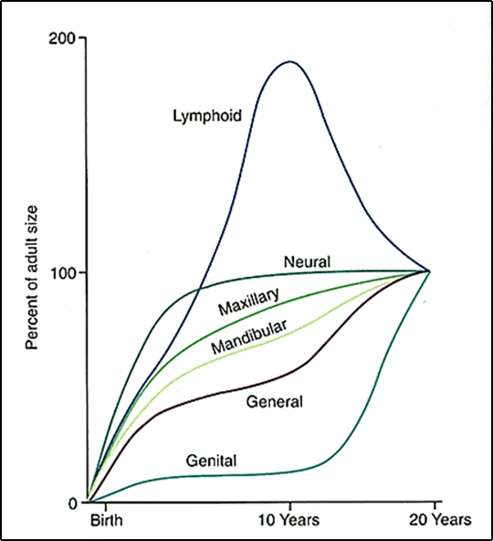

| Column 1 | Column 2 |
|---|---|
| Lorem | Lorem |
| Lorem | Lorem ip. |
| Row 3, Cell 1 | Lorem i. |
| Row 4, Cell 1 | Lorem ips |
| Row 5, Cell 1 | Row 5, Cell 2 |
Growth is not steady & uniform, wherein all body parts enlarge at same rate, & increment of 1 year equal to proceeding or succeding year.
Period when sudden acceleration of Growth. This sudden increase in growth, termed 'Growth Spurt'
Human body doesn't grow at Same Rate Throughout Life.
Different organs grow at different rate, to different amount, at different times.
Body tissues broadly classified into 4 types:
